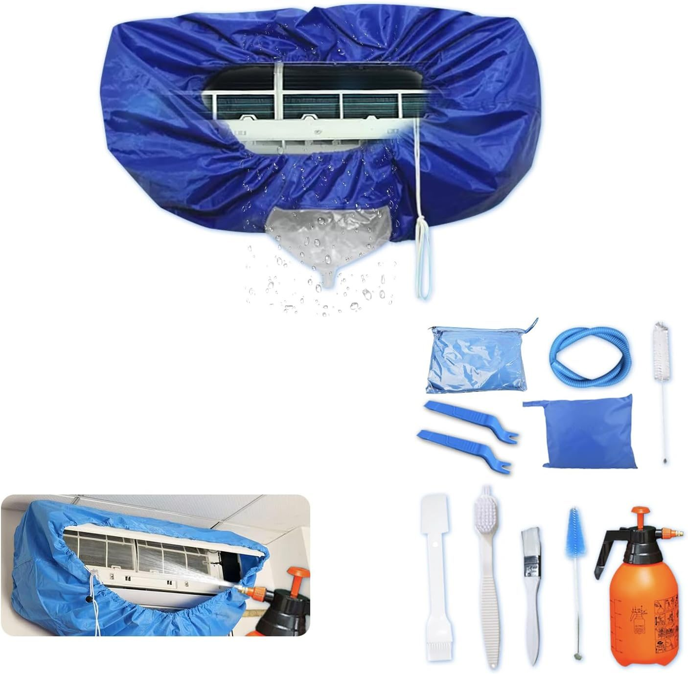

| Couleur | Glass Blue |
| Marque | kikepilm |
| Source d'alimentation | Câble électrique |
| Méthode de contrôle | Bouton poussoir |
| Type de contrôleur | Contrôle manuelle |
| Caractéristique spéciale | Kit de nettoyage complet et facile à utiliser pour climatiseurs avec installation facile |
| Nombre d'unités | 12.0 unité |
| Fabricant | kikepilm |